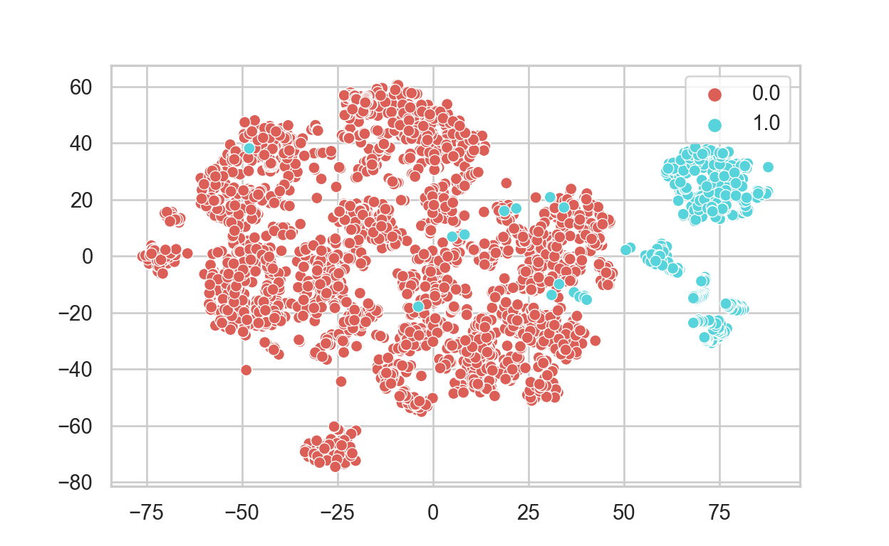

Introduction
Machine Learning (ML) is a process of learning the best possible and most relevant patterns, relationships, or associations from a data set to predict the outcomes on unseen data. Broadly, there are three types of ML process:
Supervised Learning, which is a process that trains a ML model on a labelled data set. The model aims to find the relationships among the independent and dependent variable to predict unseen data we may receive in the future.
Unsupervised Learning, which is a process of training a ML model on a dataset in which the target variable is not known. The model aims to find the most relevant patterns in the data or the segments of data.
Semi-Supervised Learning, which is a combination of supervised and unsupervised learning processes in which the unlabeled data is used to train a model as well. In this approach, the properties of unsupervised learning are used to learn the best possible representation of data, and the properties of supervised learning are used to learn the relationships to make predictions.
Each ML algorithm has its own use under the consideration of a) the size, quality, and nature of data, b) The available computational time, c) The urgency of the task, and d) the expected result. Among the vast availability of algorithms, each ML type has its own role in tackling different types of data science problem depending on the mentioned considerations. The ML algorithm cheat sheet below is a good starting point to choose algorithms that are appropriate for your specific problems.

- We have previously discussed about the use supervised and unsupervised ML separately in other posts. However, the problem we will tackle in this post requires the ability of both unsupervised and supervised learning, which is why I will use semi-supervised learning in this post to solve data imbalance problem by generating a pseudo-labeled data and use it to train an ML model to perform a classification.
Data Set Preparation
Semi-supervised learning is a restatement of the missing data imputation problem, which is specific to small data set with missing-label cases. This problem is commonly encountered in data set generation contexts as retrieving clean data can be costly and time consuming. Applying supervised machine learning techniques to small data set might yield poor results that cannot be further used; thus, it would be more useful to address this problem with a combination of both machine learning approaches (i.e., unsupervised and supervised) for optimal results.
For this post, I will be using the Credit Card Fraud Detection data set from the Universit Libre de Bruxelles (Brussels, Belgium) machine learning group The dataset contains transactions made by credit cards in September 2013 by European cardholders. This dataset presents transactions that occurred in two days, where we have 492 fraud transactions out of 284,807 transactions. We will first importing in Python modules and the data set as usual.
Show code
from keras.layers import Input, Dense
from keras.models import Model, Sequential
from keras import regularizers
from sklearn.model_selection import train_test_split
from sklearn import metrics
from sklearn.metrics import classification_report, accuracy_score
from sklearn.manifold import TSNE
from sklearn import preprocessing
from sklearn.linear_model import LogisticRegression
from sklearn.metrics import confusion_matrix
import matplotlib.pyplot as plt
import pandas as pd
import numpy as np
import seaborn as snsShow code
sns.set(style="whitegrid")
np.random.seed(203)
data = pd.read_csv("creditcard.csv")
data["Time"] = data["Time"].apply(lambda x : x / 3600 % 24)
data.head() Time V1 V2 V3 ... V27 V28 Amount Class
0 0.000000 -1.359807 -0.072781 2.536347 ... 0.133558 -0.021053 149.62 0
1 0.000000 1.191857 0.266151 0.166480 ... -0.008983 0.014724 2.69 0
2 0.000278 -1.358354 -1.340163 1.773209 ... -0.055353 -0.059752 378.66 0
3 0.000278 -0.966272 -0.185226 1.792993 ... 0.062723 0.061458 123.50 0
4 0.000556 -1.158233 0.877737 1.548718 ... 0.219422 0.215153 69.99 0
[5 rows x 31 columns]- To check if the data is imbalance, we will count the target variable by its value (i.e., 0, 1). The result below indicates that the data is highly imbalance as only 0.17 % cases are fraud transactions. This problem could lower performance of a supervised ML model as the machine learns only one class (0) and discard the other class as noises.
Show code
vc = data['Class'].value_counts().to_frame().reset_index()
vc['percent'] = vc["Class"].apply(lambda x : round(100*float(x) / len(data), 2))
vc = vc.rename(columns = {"index" : "Target", "Class" : "Count"})
vc Target Count percent
0 0 284315 99.83
1 1 492 0.17- We will also sample 1000 non-fraud data and merge it with fraud data to form a data set for this task.
Show code
non_fraud = data[data['Class'] == 0].sample(1000)
fraud = data[data['Class'] == 1]
df = non_fraud.append(fraud).sample(frac=1).reset_index(drop=True)
X = df.drop(['Class'], axis = 1).values
Y = df["Class"].values Visualize Fraud and NonFraud Transactions
- Lets visualize the nature of fraud and non-fraud transactions using
T-SNE. T-SNE (t-Distributed Stochastic Neighbor Embedding) is an
unsupervised technique primarily used for data exploration and
visualizing high-dimensional data. The technique reduces dimensionality
of the data set and produces only components with maximum information.
Every dot in the following represents a transaction. Non Fraud
transactions are coded as 0 - the red dot, while Fraud transactions
are coded as 1 - the blue dot. The two axis are the components
extracted by T-SNE.
Show code
tsne = TSNE(n_components=2, random_state=0) TSNE_result = tsne.fit_transform(X) sns.scatterplot(TSNE_result[:,0], TSNE_result[:,1], hue=Y, legend='full', palette="hls")- The graph above shoes that there are many non_fraud transactions which are very close to fraud transactions. This pattern makes the data challenging to classify as they are ambiguous. This problem can be mitigated by using AutoEncoders, which is another unsupervised learning algorithm.
AutoEncoders
Autoencoders are a special type of neural network architectures in which the output is same as the input. In other words, an autoencoder, once trained on appropriate training data, can be used to generate compressed copies of input data point while preserve most of the information (features) from the input. For our case, the model will try to learn the best representation of non-fraud cases and generate the representations of fraud cases.
As for how it works, Autoencoders are designed to have a bottle-neck architecture with a few neurons to comprehensively compress the knowledge about representation of the original input for the machine to reproduce it by using decoders. The picture below shows architecture of the machine in how it learns from the input data.
- First, we will create a network with one input layer and one output layer. Both of them will have identical dimensions.Show code
## input layer input_layer = Input(shape=(X.shape[1],)) ## encoding part encoded = Dense(100, activation='tanh', activity_regularizer=regularizers.l1(10e-5))(input_layer) encoded = Dense(50, activation='relu')(encoded) ## decoding part decoded = Dense(50, activation='tanh')(encoded) decoded = Dense(100, activation='tanh')(decoded) ## output layer output_layer = Dense(X.shape[1], activation='relu')(decoded)- Next, we will create the model architecture by compiling the above input layer and output layers. We will also add the optimizer and loss function. I am using adadelta as the optimizer and mse as the loss function. I will also transform the data with min-max scaling to make it easier for the model to process.
Show code
autoencoder = Model(input_layer, output_layer) autoencoder.compile(optimizer="adadelta", loss="mse")Show code
x = data.drop(["Class"], axis=1) y = data["Class"].values x_scale = preprocessing.MinMaxScaler().fit_transform(x.values) x_norm, x_fraud = x_scale[y == 0], x_scale[y == 1]- One advantage of using autoencoders is that we do not need a large amount of data to teach the machine. We will use only 2000 rows of non fraud cases to train the autoencoder. The choice of small samples from the original data set is based on the intuition that one class characteristics (non fraud) will differ from that of the other (fraud). To distinguish these characteristics, we need to show the autoencoders only one class of data. This is because the autoencoder will try to learn only one class and automatically distinguish the other class.
Show code
autoencoder.fit(x_norm[0:2000], x_norm[0:2000], batch_size = 256, epochs = 10, shuffle = True, validation_split = 0.20)Obtain the Generated Data
- After training the model, we can obtain representation of the data (aka its latent pattern) to learn how the data is distributed by accessing the model. A latent variable is a random variable that cannot be observed directly, but it lays the foundation of how the data is distributed. Latent variables also give us a low-level representation of high-dimensional data. They give us an abstract representation of how the data is distributed. We will also extract the generated fraud and non-fraud data to create a new data set to be used. We will also visualize the new data for comparison.
Show code
hidden_representation = Sequential() hidden_representation.add(autoencoder.layers[0]) hidden_representation.add(autoencoder.layers[1]) hidden_representation.add(autoencoder.layers[2])Show code
norm_hid_rep = hidden_representation.predict(x_norm[:3000]) fraud_hid_rep = hidden_representation.predict(x_fraud)Show code
new_x = np.append(norm_hid_rep, fraud_hid_rep, axis = 0) new_y_not_fraud = np.zeros(norm_hid_rep.shape[0]) new_y_fraud = np.ones(fraud_hid_rep.shape[0]) new_y = np.append(new_y_not_fraud, new_y_fraud)Show code
TSNE_result_new = tsne.fit_transform(new_x) sns.scatterplot(TSNE_result_new[:,0], TSNE_result_new[:,1], hue=new_y, legend='full', palette="hls")
- The new TSNE plot shows that both fraud and non-fraud transactions are pretty visible and linearly separable. We can use simple linear models such as logistic regression to classify this data without the needs for complex models like Random Forest that could be harder to interpret.
Linear Classifier
- As usual, we will divide the new data set into a training and a testing asset before passing them to a logistic regression model. We will also request for a confusion matrix to map out a summary of prediction results.
Show code
X_train, X_test, y_train, y_test = train_test_split(new_x, new_y, test_size=0.3) clf_lr = LogisticRegression(max_iter = 450, random_state = 123) clf_lr.fit(X_train,y_train)LogisticRegression(max_iter=450, random_state=123)Show code
pred_lr = clf_lr.predict(X_test) print("Accuracy: {:0.4f}".format(accuracy_score(y_test, pred_lr)))Accuracy: 0.9781Show code
report_lr = classification_report(y_test, pred_lr) print(report_lr)precision recall f1-score support 0.0 0.97 1.00 0.99 894 1.0 1.00 0.85 0.92 154 accuracy 0.98 1048 macro avg 0.99 0.93 0.95 1048 weighted avg 0.98 0.98 0.98 1048Show code
conf_matrix = confusion_matrix(y_test, pred_lr) sns.heatmap(conf_matrix.T, square=True, annot=True, fmt='d', cbar=False) plt.xlabel('true label') plt.ylabel('predicted label') plt.title("Confusion matrix of Logistic Regression") plt.show()Conclusion
- Our logistic regression model shows a satisfaction result with the accuracy of 99.52%. The application of autoencoders as the unsupervised part in this task shows that semi-supervised learning can be effective at handling the case where there is a lack of labeled data to train our machine. Manual data labeling by human is an expensive and time-consuming process, which is why this approach to machine learning could be very helpful in lessening the task on our end. Semi-supervised learning can be used for the classification of web pages, audio, images, or even textual and numerical data where human labeling is not possible. As always, thank you for reading this!